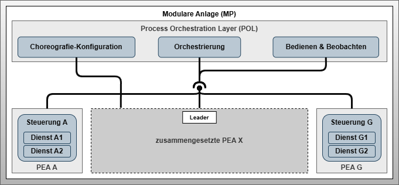

Choreographed System Architecture
Artifact - Choreography-enabled System Architecture
Artifact Factsheet
| Fact Sheet | |
|---|---|
| Name | Choreography-enabled System Architecture |
| Artifact Type | Design Pattern |
| Target Users | System Architects |
| Objective | This architecture pattern describes the application of automation service choreographies in the context of a modular plant and central orchestration. It provides insights into changes and influences through the use of choreographies in combination with central orchestration. Rigid equipment-oriented structures and boundaries blur due to composed functions that are formed across equipment boundaries. The transformation from current to future system architectures is presented using three figures. Current architectures are based exclusively on central orchestration. Future architectures use both central orchestration and choreographies for system automation. The purpose of the architecture pattern is to clarify the changes to future system architects and introduce the next level of detail of the concept. |
Relevant Publications
This architectural pattern will be initially published in the PhD thesis, which is not yet publicly available.
Artifact Description
The architectural pattern of Choreography-enabled System Architecture introduces the resulting system architecture and shows the impact of choreographed automation services on service-based automation systems and their central orchestration in the Process Orchestration Layer.
 Figure 1: System architecture of a modular plant with a modular unit composed by choreography
Artifact Building Blocks
Modular Plant
The Modular Plant represents the physical and software-based system that should be capable of manufacturing a product. It consists of the Process Orchestration Layer as well as several atomic and modular PEAs.
Modular Units - PEA A, PEA G and Modular PEA X
The modular units PEA A and PEA G each describe a self-contained system that can provide services with automation functions of different granularity. Each PEA has at least one control system connected to the Process Orchestration Layer. Current PEAs are passive communication participants regarding their role in communication with the Process Orchestration Layer, hence existing systems are also called passive choreography participants. The active role of communication lies solely with the Process Orchestration Layer. This will need to change in the future for modular units in the context of choreographies.
For the modular PEA X, this will partially change in the future. Towards the Process Orchestration Layer, the modular PEA X remains a passive communication participant. As active choreography participants, the FEAs and COMPs within the modular PEA X gain the ability to act as active communication participants. This requires FEAs and COMPs to have their own control systems that meet these requirements while being adapted in performance to their specific needs.
Controllers and the Concept of Choreography Participants
The Controller represents the program-executing component within a PEA. Typically, PEAs have exactly one control system on which services are implemented and provided. However, it cannot be excluded that modular units also have two or more control systems.
An active choreography participant refers to a control system that has implemented the design patterns developed in this work. A passive choreography participant refers to a control system that has not implemented these design patterns.
Services
A Service describes the encapsulation of an automation function through state-based abstraction and parameterization. Services also have input and output process values that can be linked together for closed-loop control functions or interlocks.
Process Orchestration Layer (POL)
The Process Orchestration Layer bundles the system functions necessary for operating the Modular Plant. Essential components include central Orchestration, Operation & Monitoring, and Choreography Configuration. The latter is added through the introduction of choreography mechanisms for modular PEAs.
Orchestration
The Orchestration enables coordination of services provided by the PEAs. Orchestration does not distinguish whether they are services of atomic or modular PEAs.
Operation & Monitoring
Operation & Monitoring provides a simple and clear way to look into the current process. Process diagrams enable plant operators to monitor the status and progress of production and intervene when necessary.
Choreography Configuration
The newly introduced Choreography Configuration describes a Process Orchestration Layer system function with which choreographies can be designed and activated. Activation includes transferring the configuration and initiating execution of configurable logic and configurable communication.
Leader
When designing an automation service choreography, one service must act as Leader, representing the single point of access of the choreographed function to the Process Orchestration Layer and communicating with higher-level systems through its interface.
A service can assume the role of Internal Lead if its state matches that of the choreographed function. The other services act as followers. In cases where no single service can represent the entire function – such as in sequential processes – an External Lead is required.
Artifact Decisions
Focus on Runtime Technical Aspects
System architectural investigations showed that neither an implementation nor an engineering approach for automation service choreographies existed previously. A solid engineering methodology requires clear definition of what content is captured and how it can be transferred into technical implementation.
Combination of Orchestration and Choreography
System architectural considerations raised the question of whether choreography should completely replace or supplement central orchestration. Comparison of both approaches shows that system complexity increases significantly with the number of services in choreographed systems.
While technically feasible, complete replacement of orchestration by plant-wide choreography has practical limitations due to information processing complexity and lack of clarity without supporting engineering methodology.
Therefore, this work limits choreography to combining FEAs and COMPs. Coordination of composite PEAs continues through central orchestration in the POL.
Artifact Implementation Details
The composite PEA X from Figure 1 can be implemented in various ways. Figure 2 shows a theoretical representation of all choreography patterns considered in this work, describing four patterns in total.
 Figure 2: Theoretical structure of a choreography of a composite modular unit with different occurring choreography patterns
Figure 2: Theoretical structure of a choreography of a composite modular unit with different occurring choreography patterns
Solid lines describe connections between two active (choreography) participants. Dashed lines describe connections between active and passive (choreography) participants. Transparent services have no significance for choreography configuration and remain available to central orchestration.
Four Choreography Patterns
Pattern 1: Modular unit (FEA B and E) with one active choreography participant. This unit has a single control system capable of participating in choreography.
Pattern 2: Modular unit with multiple controls (FEA C). Both controls are choreography-capable and participate as active participants C1 and C2.
Pattern 3: Represented by FEA D. The unit has two controls (D1 and D2). One is choreography-capable (active participant D1), the other is not (passive participant D2). The active participant D1 serves as decentralized orchestrator for the passive participant D2.
Pattern 4: Variation of Pattern 3 with participants distributed across two modular units (FEA E and F). Both units form a participant pair consisting of active participant E and passive participant F.
The resulting system architecture from the POL perspective is shown in Figure 3:
 Figure 3: System architecture resulting from choreography usage and automation services available for orchestration
Figure 3: System architecture resulting from choreography usage and automation services available for orchestration
Artifact Application
Using automation service choreographies within a modular plant leads to blurring system boundaries of modular units (PEAs, FEAs, and COMPs). The design pattern introduces an implicitly existing system level below the POL, serving to form composite functions through distributed behavioral rules and configurable communication.
The blackbox of composite PEA X from Figure 1 is merged with various FEAs from Figure 2, resulting in the modular plant shown in Figure 3 with seven physical PEAs and one non-physically existing PEA formed through choreography.
Services A1, A2, B1, B2, D11, E2, F1, G1, G2 are available to central Orchestration. Focus is on Service B1, which acts as Leader Service representing the choreography. Follower Services C11, C12, C21, C22, D12, D21, D22, E1, and F2 are part of the choreography and not available to central Orchestration.
This type of choreographed composite PEA formation can be performed multiple times. There are exactly as many Leader Services as there are configured choreographies in the system.